NPUW Pyramid JIT
Growing an NPU KV cache without paying for it up front · live Qwen2.5-0.5B FP16 measurement · Intel NPU 5 · OpenVINO 2026.3
1 · Why the NPU, when the same chip has an iGPU
The honest answer is that this is a Pareto choice, not a dominance one. Measured on this machine, Qwen2.5-7B INT8 decode at a right-sized 1024 window:
| Decode engine | Energy | Latency |
|---|---|---|
| Xe3 iGPU | 170 J | 6.7 s |
| NPU 5 | 105 J | 12.2 s |
The NPU costs 38% less energy and takes 1.8× longer. Prefill placement between the two is neutral. So the NPU is the right target whenever energy or thermal headroom is the binding constraint rather than latency — sustained background work, battery, or a device already using the iGPU for something else.
That last case is the non-energy argument, and it is the one shipping systems act on. The iGPU is also the display, compositor, video and game engine; the NPU is otherwise idle. Agent.xpu measures pure-iGPU prefill pinned at 100% utilization and reports a 32.5–37.1% reduction in iGPU utilization by moving work to the NPU. Microsoft gates Windows Studio Effects on an NPU with no iGPU fallback, on the stated rationale of “battery-friendly AI effects that reduce the burden on the device CPU and GPU.” That rationale is stated, not quantified — no vendor page in the surveyed set gives watts, joules or frame rates.
2 · Why the window is fixed at compile time
This is the deployment model of every edge NPU stack, not an OpenVINO quirk.
MAX_PROMPT_LEN + MIN_RESPONSE_LEN,
fixed when the pipeline is constructed.--context-length is an option to the export
command, and that export “may take 2-3 hours.” The runtime
genie_config.json must be edited to match the compiled binary.3 · Why no single window is the right one
Across workloads, the right answer differs by task class. In Microsoft’s Azure production trace the conversation service has a median context of 1,020 tokens with 86% of requests under 2K, while the coding service sits at 1,469 with only 62.5% under 2K. Same service family, different correct window.
Within a single on-device agent session it is worse, because the requirement is not drawn once — it grows. From our own OSWorld run on this machine (Holo3, 93 episodes, history eviction disabled so the true demand is visible):
| Per-episode context | Tokens |
|---|---|
| first call | 3,254 |
| episode peak, median | 18,623 |
| episode peak, p95 | 101,082 |
| episode peak, max | 160,968 |
Provision for the observed maximum and the median episode uses 11.6% of it. Growth within one episode is 5.8× at the median and 49× at the worst.
But the rate is predictable even though the endpoint is not. Each step appends a median of 2,227 tokens — one screenshot plus one action — and not a single step in the run shrank the context. So the crossings are near-deterministic: 8K is first exceeded at step 4, 16K at step 7–8, 32K at step 14–15, while session length itself runs from 8 steps at the median to 100 at the tail. That gap is the whole opportunity: you cannot know where a session ends, but you always know when it is about to outgrow the artifact it is running on — several steps ahead of the fact.
4 · What an oversized window costs
| Axis | Cost | Source |
|---|---|---|
| Compile | 17 s at 1K → 154 s at 16K → 460 s at 32K | this machine, Qwen2.5-1.5B INT8 |
| First token | a short prompt pays the same TTFT as a full-length one | Intel, documented |
| Decode rate | 20–24% slower as the compiled context grows 16 → 4096, at a fixed number of generated tokens | Snapdragon, 1–1.5B |
| KV memory | only 20.4% of pre-allocated KV holds real token state | PagedAttention, SOSP’23 |
The decode-rate row is the one that surprises: on a static-shape NPU, decode cost tracks the compiled window rather than the tokens actually generated, so an oversized artifact is slower per token for the entire session. Our own arms show the same sign — the pyramid arms decode at 0.752–0.754 tok/s in the first 1K band against 0.740 for the model compiled at the full 16,384 context.
5 · Why existing mechanisms do not cover this
| Mechanism | Why it does not solve it on a static-shape NPU |
|---|---|
| PagedAttention / vLLM | block tables need runtime-mutable indirection; a compiled blob has fixed shapes and offsets, and the ceiling is a compile-time constant |
| vAttention | CUDA virtual-memory paging with a patched driver; no NPU equivalent, and it still reserves at the maximum context |
| Core ML EnumeratedShapes | selects among fixed pre-declared buckets; never grows one, and carries no state across them |
| Qualcomm AR-N multi-graph | buckets enumerated at export; re-picking the window costs a 2–3 hour export |
| OpenVINO chunked prefill | feeds a long prompt in pieces within a still-bounded context; does not grow it |
| Llumnix-style migration | moves requests between instances, not across differently-compiled artifacts on one device |
No published mechanism copies live KV state from one compiled static artifact into a differently-compiled larger one on the same device.
Full 1K→8K comparison · N=5 complete
Loading paired intervals…
| Arm | Mean RSS | Peak RSS | Mean NPU alloc | Peak NPU alloc | Runs |
|---|---|---|---|---|---|
| Waiting for completed arms… | |||||
Affinity answer and targeted validation
Yes, sub-stage affinity exists, but it is a property of a real graph in a specific stage, precision and compile path—not a permanent label attached to an operator name. The fresh Qwen2.5-3B validation below runs a full decoder block and two ablated versions at sequence 512, then prices attention and FFN by differencing those realistic graphs. GPU and NPU, FP16 and INT8, prefill and decode are all swept; the NPU's plain and NPUW paths are both tried, and the fastest valid one is retained.
| in-situ unit | stage | precision | NPU path | latency NPU÷iGPU | energy NPU÷iGPU | affinity |
|---|---|---|---|---|---|---|
| whole block | prefill | FP16 | plain | 2.11× | 1.22× | iGPU |
| whole block | prefill | INT8 | plain | 1.40× | 0.86× | Pareto |
| whole block | decode | FP16 | plain | 1.05× | 0.48× | Pareto |
| whole block | decode | INT8 | plain | 0.82× | 0.41× | NPU |
| attention marginal | prefill | FP16 | NPUW | 32.43× | 21.94× | iGPU |
| attention marginal | prefill | INT8 | NPUW | 2.95× | 0.88× | Pareto |
| attention marginal | decode | FP16 | plain | 0.81× | 0.28× | NPU |
| attention marginal | decode | INT8 | plain | 0.50× | 0.16× | NPU |
| FFN marginal | prefill | FP16 | plain | 2.59× | 1.37× | iGPU |
| FFN marginal | prefill | INT8 | plain | 1.78× | 1.04× | iGPU |
| FFN marginal | decode | FP16 | plain | 1.07× | 0.51× | Pareto |
| FFN marginal | decode | INT8 | plain | 1.00× | 0.53× | NPU energy / latency neutral |
Ratios are NPU ÷ iGPU; below 1 favors NPU. Qwen2.5-3B,
sequence 512, three reps-slope windows per graph, idle-subtracted PSys, OpenVINO 2026.0.
The plain-NPU no_attention prefill ablation fell onto the known isolated
Parameter→MatMul slow path (0.888 s FP16, 0.453 s INT8), which would make
the marginal negative. It is rejected; NPUW supplies the valid prefill-attention
difference. That path sensitivity is part of the affinity result, not noise.
| determinant | why it moves latency, throughput and energy | experiment control |
|---|---|---|
| stage shape / arithmetic intensity | prefill exposes large matrix work; one-token decode becomes memory-, dispatch- and state-dominated | measure prefill and decode separately at the same sequence |
| graph context and fusion | the NPU can change by 7–121× between an isolated kernel and the same work inside a decoder block | use full/no-FFN/no-attention graph differencing |
| precision and realized kernels | INT8 storage does not guarantee that every device executes an efficient INT8 kernel | sweep FP16 and INT8; verify the compiled graph |
| static shape and KV/state ownership | NPU compilation fixes shapes, while decode carries mutable cache state across token steps | hold sequence/capacity fixed and qualify token signatures |
| partition and transfer boundaries | subgraphs that look locally fast can lose to synchronization, copies and layout conversion | compare in-situ block, whole model and the zero-boundary oracle |
| runtime / driver path | compile path, queueing and wrapper behavior can dominate silicon time | record target, execution device, compile path and device counters |
query_model to find supported
operations, assign affinity to block-sized subgraphs, and profile those subgraphs in
situ. Keep residual/norm/attention dependencies together and keep one KV-cache owner
unless state is made explicit. A future cross-device implementation should expose KV
as input/output tensors, back them with the
NPU Remote Tensor / DMA-BUF API,
add explicit fences and layout/version checks, then require token-equivalence before
accepting any timing result.Method basis: OpenVINO HETERO affinity and query_model; NPU static-shape LLM execution; precision control; performance-counter interpretation; and Agent.xpu.
0 · The energy split is validated, not assumed
Panther Lake gives the NPU no RAPL domain of its own, so NPU energy has to be recovered as a residual. Before anything rests on that, each half of the attribution is tested by driving one engine at a time and watching every domain together with two independent hardware counters.
| check | result | evidence |
|---|---|---|
| uncore tracks the iGPU | PASS | GPU load raises uncore by 13.92 W |
| iGPU work does not appear on the NPU counter | PASS | npu_util=0.0 |
| NPU work leaves uncore at idle | PASS | NPU load moves uncore by -0.03 W |
| NPU counter confirms the NPU ran | PASS | npu_util=0.9849443514644352 |
| NPU power shows up as a package residual | PASS | package-(core+uncore+dram) = 5.01 W |
| CPU control moves core, not the accelerators | PASS | core +33.62 W, uncore -0.03 W |
Convention used throughout:
iGPU = uncore, NPU = package-0 − core − uncore − dram,
psys = whole platform, all net of a measured idle baseline — so every
number is the marginal cost of the work, not the machine's standing draw.
1 · An isolated kernel does not measure this NPU
The natural way to build an operator roofline is to compile one operator on its own and time it. Done that way, this NPU's FP16 compute roof comes out at 0.074 TFLOP/s — dead constant across seven GEMM shapes, which looks convincingly like a real ceiling. It is not. The same MatMuls, inside a decoder block on the same device and the same compile path, run at up to 9.00 TFLOP/s.
The block is the number that is right: its output matches a CPU run of the identical
graph to a correlation of 0.999999 (max absolute difference 0.0059, which is FP16
rounding), so the arithmetic demonstrably happened. An ablation ladder locates the
trigger — under NPUW, an FP16 MatMul that reads a graph Parameter directly
runs at 0.074 TFLOP/s, while inserting any operation between the Parameter and the
MatMul yields 1.22 TFLOP/s. That also explains why INT8 looked healthier than FP16
throughout: quantisation inserts FakeQuantize nodes, which are themselves
intervening operations.
2 · Measured rooflines
| device · precision | P_pk on real graphs (TFLOP/s) | P_pk from an isolated GEMM | B_pk (GB/s) | knee I* (FLOP/B) | where the roof was reached |
|---|---|---|---|---|---|
| iGPU · fp16 | 11.11 | 10.285 | 68.7 | 161.9 | block/qwen25_3b_int8/prefill |
| iGPU · int8 | 13.46 | 19.352 | 65.6 | 205.2 | model/llama32_3b_int8/prefill |
| NPU · fp16 | 9.00 | 0.074 | 62.8 | 143.3 | block/qwen25_1_5b_int8/prefill |
| NPU · int8 | 12.29 | 1.724 | 48.4 | 253.8 | block/llama32_3b_int8/prefill |
3 · The efficiency claim, in the units the paper states it in
Agent.xpu's central claim is that “static-shaped NPU kernels achieve higher energy efficiency (TFLOPS/W) while delivering throughput comparable to iGPUs”. It never plots that axis. Here it is, together with the same comparison as a latency/energy trade.
4 · NPU vs iGPU at three granularities
An operator-level placement policy is only sound if operator-level numbers predict what a whole model does. Measuring the same comparison at three granularities tests exactly that — and the isolated-kernel row is kept in the table as the control that shows what happens when the measurement is built the usual way.
| granularity | stage | pairs | median energy NPU÷iGPU | median latency NPU÷iGPU | NPU cheaper | NPU faster |
|---|---|---|---|---|---|---|
| operator (in situ) | prefill | 19 | 1.06 | 1.67 | 8/19 | 0/19 |
| operator (in situ) | decode | 19 | 0.34 | 0.92 | 19/19 | 17/19 |
| operator (isolated kernel) | prefill | 36 | 12.27 | 29.05 | 12/36 | 8/36 |
| operator (isolated kernel) | decode | 36 | 0.48 | 1.07 | 36/36 | 10/36 |
| block | prefill | 10 | 0.82 | 1.17 | 8/10 | 2/10 |
| block | decode | 10 | 0.35 | 0.84 | 10/10 | 9/10 |
| model | prefill | 10 | 1.14 | 1.42 | 3/10 | 1/10 |
| model | decode | 10 | 5.28 | 13.56 | 5/10 | 2/10 |
5 · Whole models, every size and precision
| model × precision | stage | device | tokens/s | J per token | W (net of idle) | compile s |
|---|---|---|---|---|---|---|
| llama32_1b_fp16 | decode | iGPU | 23.22 | 0.8327 | 18.92 | 4.3 |
| llama32_1b_fp16 | decode | NPU | 24.24 | 0.5506 | 13.15 | 31.9 |
| llama32_1b_fp16 | prefill | iGPU | 3148.98 | 8.2831 | 23.38 | 4.3 |
| llama32_1b_fp16 | prefill | NPU | 3039.66 | 7.4170 | 22.03 | 31.9 |
| llama32_1b_int8 | decode | iGPU | 46.38 | 0.5078 | 22.73 | 3.3 |
| llama32_1b_int8 | decode | NPU | 2.30 | 2.9001 | 6.59 | 50.4 |
| llama32_1b_int8 | prefill | iGPU | 3859.36 | 5.8303 | 21.99 | 3.3 |
| llama32_1b_int8 | prefill | NPU | 1435.97 | 9.0475 | 12.69 | 50.4 |
| llama32_3b_fp16 | decode | iGPU | 10.49 | 2.2844 | 23.66 | 9.2 |
| llama32_3b_fp16 | decode | NPU | 9.60 | 1.4283 | 13.60 | 54.7 |
| llama32_3b_fp16 | prefill | iGPU | 1565.97 | 20.3971 | 31.24 | 9.2 |
| llama32_3b_fp16 | prefill | NPU | 1263.68 | 21.8162 | 27.01 | 54.7 |
| llama32_3b_int8 | decode | iGPU | 19.66 | 1.3016 | 25.52 | 48.7 |
| llama32_3b_int8 | decode | NPU | 0.37 | 11.3160 | 4.16 | 96.5 |
| llama32_3b_int8 | prefill | iGPU | 2038.40 | 15.4628 | 30.83 | 48.7 |
| llama32_3b_int8 | prefill | NPU | 296.38 | 27.7343 | 8.03 | 96.5 |
| qwen25_0_5b_fp16 | decode | iGPU | 63.44 | 0.3290 | 18.79 | 2.6 |
| qwen25_0_5b_fp16 | decode | NPU | 58.12 | 0.1991 | 10.26 | 13.9 |
| qwen25_0_5b_fp16 | prefill | iGPU | 5023.00 | 3.9965 | 19.36 | 2.6 |
| qwen25_0_5b_fp16 | prefill | NPU | 5624.14 | 3.0658 | 16.76 | 13.9 |
| qwen25_0_5b_int8 | decode | iGPU | 106.69 | 0.2178 | 19.67 | 3.2 |
| qwen25_0_5b_int8 | decode | NPU | 7.87 | 1.1501 | 8.85 | 12.3 |
| qwen25_0_5b_int8 | prefill | iGPU | 5372.88 | 3.3851 | 17.74 | 3.2 |
| qwen25_0_5b_int8 | prefill | NPU | 3776.35 | 3.7086 | 13.66 | 12.3 |
| qwen25_1_5b_fp16 | decode | iGPU | 20.88 | 1.0021 | 20.69 | 4.8 |
| qwen25_1_5b_fp16 | decode | NPU | 20.05 | 0.5340 | 10.37 | 23.8 |
| qwen25_1_5b_fp16 | prefill | iGPU | 2760.70 | 9.6421 | 26.27 | 4.8 |
| qwen25_1_5b_fp16 | prefill | NPU | 2245.81 | 8.6334 | 18.98 | 23.8 |
| qwen25_1_5b_int8 | decode | iGPU | 36.15 | 0.6561 | 22.46 | 3.1 |
| qwen25_1_5b_int8 | decode | NPU | 1.93 | 4.9992 | 9.57 | 29.3 |
| qwen25_1_5b_int8 | prefill | iGPU | 3077.38 | 7.5559 | 22.49 | 3.1 |
| qwen25_1_5b_int8 | prefill | NPU | 1111.94 | 15.6572 | 17.00 | 29.3 |
| qwen25_3b_fp16 | decode | iGPU | 9.37 | 2.2255 | 20.65 | 8.4 |
| qwen25_3b_fp16 | decode | NPU | 9.68 | 1.3828 | 13.17 | 44.5 |
| qwen25_3b_fp16 | prefill | iGPU | 1610.77 | 18.4874 | 28.94 | 8.4 |
| qwen25_3b_fp16 | prefill | NPU | 1365.33 | 21.1020 | 28.15 | 44.5 |
| qwen25_3b_int8 | decode | iGPU | 20.13 | 1.1026 | 21.96 | 32.1 |
| qwen25_3b_int8 | decode | NPU | 0.73 | 10.2251 | 7.43 | 72.8 |
| qwen25_3b_int8 | prefill | iGPU | 1856.55 | 14.2695 | 21.94 | 32.1 |
| qwen25_3b_int8 | prefill | NPU | 516.35 | 26.1612 | 13.20 | 72.8 |
6 · Precision does not mean the same thing on the two engines
Agent.xpu profiles at W8A16 and treats 8-bit weights as the NPU's natural format, which is what an INT8 MAC array should want. On this stack it is the wrong choice: the NPU's best whole-model configuration is FP16, where it matches the iGPU's prefill throughput and undercuts its decode energy, while the INT8 decode path runs 11× slower than FP16 on the same weights. The microbench shows the same shape — an INT8 GEMV compiled through NPUW streams at 1.69 GB/s against 65.8 GB/s for the plain path — so the cost looks like per-token weight handling in the quantised decode path rather than anything about the arithmetic.
| model | stage | iGPU speed INT8÷FP16 | iGPU energy INT8÷FP16 | NPU speed INT8÷FP16 | NPU energy INT8÷FP16 |
|---|---|---|---|---|---|
| llama32_1b | prefill | 1.23× | 0.70× | 0.47× | 1.22× |
| llama32_1b | decode | 2.00× | 0.61× | 0.09× | 5.27× |
| llama32_3b | prefill | 1.30× | 0.76× | 0.23× | 1.27× |
| llama32_3b | decode | 1.87× | 0.57× | 0.04× | 7.92× |
| qwen25_0_5b | prefill | 1.07× | 0.85× | 0.67× | 1.21× |
| qwen25_0_5b | decode | 1.68× | 0.66× | 0.14× | 5.78× |
| qwen25_1_5b | prefill | 1.11× | 0.78× | 0.50× | 1.81× |
| qwen25_1_5b | decode | 1.73× | 0.65× | 0.10× | 9.36× |
| qwen25_3b | prefill | 1.15× | 0.77× | 0.38× | 1.24× |
| qwen25_3b | decode | 2.15× | 0.50× | 0.08× | 7.39× |
7 · Verdicts
| claim | verdict | measured | |
|---|---|---|---|
| C1 | NPU kernels are more energy-efficient than the iGPU (paper: 'higher energy efficiency (TFLOPS/W)') | holds | n = 78; supported = 53; fraction = 0.679; median_energy_ratio = 0.618 |
| C2 | NPU throughput is comparable to the iGPU (within 2x either way) | holds | n = 78; median_speed_ratio_npu_over_gpu = 1.059 |
| C3 | decode belongs on the iGPU, not the NPU (paper: 'offload dynamic prefill and all decode ops to iGPU') | does not hold | n = 39; decode_cells_where_npu_uses_less_energy = 34; decode_cells_where_npu_is_faster = 28; median_energy_ratio = 0.435; median_speed_ratio = 0.958 |
| C4 | prefill MHA belongs on the iGPU | holds | n = 9; cells_where_npu_uses_less_energy = 3; cells_where_npu_is_faster = 0; median_energy_ratio = 16.413 |
| C5 | power levels: NPU ~10 W stable; iGPU 25 W decode -> 31 W prefill | n/a | measured_npu_prefill_w = 16.880; measured_npu_decode_w = 9.914; measured_gpu_prefill_w = 22.937; measured_gpu_decode_w = 21.325; note = measured net of idle (marginal power of the work); the paper's figures are whole-device readings on a different SoC (Core Ultra 5 125H). |
| M1 | methodology: calibrating a roofline from an isolated single-operator GEMM measures this hardware faithfully | does not hold | realistic_roof_over_isolated_roof = {'GPU_fp16': 1.08, 'GPU_int8': 0.7, 'NPU_fp16': 121.24, 'NPU_int8': 7.13}; npu_understated_by = 7.1-121x; igpu_agreement = 0.70-1.08x; note = the realistic-graph number is the correct one: the decoder block's output was verified against a CPU run of the identical graph (corr 0.999999, max_abs 0.0059 at FP16). |
| C6[GPU_fp16] | stage dichotomy on GPU_fp16: every prefill point sits above the knee (I* = 161.9 FLOP/B) and every decode point below it | holds | knee = 161.867; prefill_above_knee = 25/25; decode_below_knee = 25/25 |
| C6[GPU_int8] | stage dichotomy on GPU_int8: every prefill point sits above the knee (I* = 205.2 FLOP/B) and every decode point below it | holds | knee = 205.228; prefill_above_knee = 25/25; decode_below_knee = 25/25 |
| C6[NPU_fp16] | stage dichotomy on NPU_fp16: every prefill point sits above the knee (I* = 143.3 FLOP/B) and every decode point below it | holds | knee = 143.309; prefill_above_knee = 45/45; decode_below_knee = 47/47 |
| C6[NPU_int8] | stage dichotomy on NPU_int8: every prefill point sits above the knee (I* = 253.8 FLOP/B) and every decode point below it | does not hold | knee = 253.846; prefill_above_knee = 41/44; decode_below_knee = 49/49 |
Setup
Core Ultra 7 356H (Panther Lake): Xe3 iGPU, NPU 5, 96 GB DDR5-5600, Ubuntu 24.04, kernel 6.17.0, OpenVINO 2026.0. Energy from the powercap RAPL interface (package/core/uncore/dram/psys) with a measured idle baseline subtracted. Operator and block cells use a reps-slope fit so per-window fixed cost cancels; whole-model cells use direct windowing because the calls are long enough not to need it. Five small dense decoders — Qwen2.5 0.5B/1.5B/3B and Llama-3.2 1B/3B — each exported at FP16 and INT8 with on-disk element types verified, since optimum-intel will silently INT8-quantise an FP16 request. On the NPU both compile paths (plain and NPUW) are swept wherever the NPU appears, because neither dominates the other. Agent.xpu's own testbed is a Core Ultra 5 125H (Meteor Lake), so absolute ceilings differ; the operator definitions, byte accounting and W8A16 convention are the paper's.
1 · As released, it generates garbage
Fluent-looking text with no relation to the prompt, on NPU, iGPU and hetero alike.
Bisected by a ladder that ruled out one layer at a time, so no step rested on a guess:
the repo's own torch model matches Hugging Face greedy decode exactly; its W8
RTN quantisation gives coherent output at every group size; and the serialised
.model file round-trips perfectly — all 1,794,773,700 bytes consumed,
reproducing the in-memory quantised model. Everything was clean until the OpenVINO
graphs.
An attractive early hypothesis — that the exporter ignores Llama-3.2's
rope_scaling (rope_type: llama3, factor: 32) — was
refuted by the first rung: that scaling is a no-op at short context and the
unmodified model already matched the reference. It is a real latent bug for long
contexts, but it was not this one.
The three defects
- Prefill buffer index mismatch. The prefill buffer is chosen from the job's
priority (reactive → 1), but swap-in was called with the default index 0.
The prompt was embedded into buffer 0 while prefill ran out of buffer 1 —
zero-allocated and never written. Every layer saw an all-zero input, RMSNorm computed
rsqrt(0), and the logits came out NaN. - Two graph inputs declared in the wrong order. The post-attention graph
declares
{weighted_V, prompt_embedding}while all seven binding sites pass{prompt_embedding, weighted_V}, silently exchanging the residual with the attention output: no NaN, plausible magnitudes, wrong tokens. - The KV cache had no layer dimension. One
{ctx_len, kv_dim}buffer that every layer read and wrote, so each layer saw the previous layer's keys. The first generated token (produced by prefill) was correct and every later one was not.
With these fixed, Llama-3.2-1B W8A16 on the NPU reproduces the Hugging Face reference generation token for token, and the prefill logits match a torch reference of the same file (argmax 2127, max 24.04 vs 23.93) within FP16 tolerance.
2 · The benchmark matrix, with energy
Llama-3.2-3B W8A16, the paper's own model, replaying agent workloads through the
exp-* harness, every arm inside a RAPL window.
| arm | workload | req/min | jobs | tokens | tok/s | median job latency (s) | energy (J) | J/token | W |
|---|---|---|---|---|---|---|---|---|---|
| iGPU only (mixed) | 20 | 20 | 94 | 15575 | 15.63 | 562 | 22528 | 1.446 | 20.1 |
| Agent.xpu scheduler (mixed) | 20 | 20 | 94 | 15575 | 15.00 | 573 | 33358 | 2.142 | 36.3 |
| iGPU only (mixed) | 6 | 6 | 24 | 4140 | 20.60 | 124 | 6146 | 1.485 | 18.7 |
| Agent.xpu scheduler (mixed) | 6 | 6 | 24 | 4140 | 11.76 | 205 | 9504 | 2.296 | 29.1 |
| blocking, iGPU | agent-plan | 20 | 48 | 11859 | 10.95 | 565 | 25330 | 2.136 | 20.7 |
| blocking, NPU | agent-plan | 20 | 48 | 11859 | 10.17 | 609 | 26148 | 2.205 | 20.1 |
| iGPU only | agent-plan | 20 | 48 | 11859 | 14.59 | 477 | 19732 | 1.664 | 20.8 |
| Agent.xpu scheduler (NPU+iGPU) | agent-plan | 20 | 48 | 11859 | 16.65 | 483 | 31743 | 2.677 | 37.7 |
| blocking, iGPU | agent-plan | 6 | 16 | 4065 | 14.17 | 159 | 8742 | 2.151 | 19.7 |
| blocking, NPU | agent-plan | 6 | 16 | 4065 | 13.07 | 173 | 8924 | 2.195 | 18.9 |
| iGPU only | agent-plan | 6 | 16 | 4065 | 21.17 | 142 | 6526 | 1.605 | 18.7 |
| Agent.xpu scheduler (NPU+iGPU) | agent-plan | 6 | 16 | 4065 | 16.32 | 164 | 12229 | 3.008 | 29.9 |
| blocking NPU (mixed) | npu | 20 | 94 | 15575 | 8.07 | 777 | 31338 | 2.012 | 19.5 |
| blocking NPU (mixed) | npu | 6 | 24 | 4140 | 9.90 | 187 | 8598 | 2.077 | 19.0 |
| blocking, iGPU | osworld-real | 6 | 16 | 4050 | 3.96 | 612 | 27776 | 6.858 | 23.5 |
| blocking, NPU | osworld-real | 6 | 16 | 4050 | 3.91 | 620 | 26398 | 6.518 | 22.1 |
| iGPU only | osworld-real | 6 | 16 | 4050 | 4.48 | 657 | 25094 | 6.196 | 23.6 |
| Agent.xpu scheduler (NPU+iGPU) | osworld-real | 6 | 16 | 4050 | 2.83 | 1235 | 55451 | 13.692 | 37.4 |
3 · Do the paper's results survive?
| claim from Agent.xpu | baseline | workload | req/min | measured here | verdict |
|---|---|---|---|---|---|
| proactive throughput 1.2-4.9x vs baseline | gpu-proact | agent-plan | 20 | 1.14× | does not reproduce |
| 26.8% lower energy than the iGPU baseline | gpu-proact | agent-plan | 20 | -60.9% | does not reproduce |
| proactive throughput 1.2-4.9x vs baseline | block-proact-npu | agent-plan | 20 | 1.64× | reproduces |
| 26.8% lower energy than the iGPU baseline | block-proact-npu | agent-plan | 20 | -21.4% | does not reproduce |
| proactive throughput 1.2-4.9x vs baseline | block-proact-gpu | agent-plan | 20 | 1.52× | reproduces |
| 26.8% lower energy than the iGPU baseline | block-proact-gpu | agent-plan | 20 | -25.3% | does not reproduce |
| proactive throughput 1.2-4.9x vs baseline | gpu-proact | agent-plan | 6 | 0.77× | does not reproduce |
| 26.8% lower energy than the iGPU baseline | gpu-proact | agent-plan | 6 | -87.4% | does not reproduce |
| proactive throughput 1.2-4.9x vs baseline | block-proact-npu | agent-plan | 6 | 1.25× | reproduces |
| 26.8% lower energy than the iGPU baseline | block-proact-npu | agent-plan | 6 | -37.0% | does not reproduce |
| proactive throughput 1.2-4.9x vs baseline | block-proact-gpu | agent-plan | 6 | 1.15× | does not reproduce |
| 26.8% lower energy than the iGPU baseline | block-proact-gpu | agent-plan | 6 | -39.9% | does not reproduce |
| proactive throughput 1.2-4.9x vs baseline | gpu-proact | osworld-real | 6 | 0.63× | does not reproduce |
| 26.8% lower energy than the iGPU baseline | gpu-proact | osworld-real | 6 | -121.0% | does not reproduce |
| proactive throughput 1.2-4.9x vs baseline | block-proact-npu | osworld-real | 6 | 0.72× | does not reproduce |
| 26.8% lower energy than the iGPU baseline | block-proact-npu | osworld-real | 6 | -110.1% | does not reproduce |
| proactive throughput 1.2-4.9x vs baseline | block-proact-gpu | osworld-real | 6 | 0.72× | does not reproduce |
| 26.8% lower energy than the iGPU baseline | block-proact-gpu | osworld-real | 6 | -99.6% | does not reproduce |
| reactive latency reduced by >=91% | gpu-mixed | — | 20 | — | does not reproduce |
| reactive latency reduced by >=91% | block-mixed-npu | — | 20 | +97.5% | reproduces |
| reactive latency reduced by >=91% | gpu-mixed | — | 6 | — | does not reproduce |
| reactive latency reduced by >=91% | block-mixed-npu | — | 6 | +91.1% | reproduces |
Caveats
Built against OpenVINO 2025.2, the version the repo targets; on 2026.0 the GPU plugin
dies in clFinish with CL_OUT_OF_RESOURCES. Independently,
iGPU prefill is numerically wrong on this Xe3 iGPU — the identical graphs
are correct on the NPU and CPU plugins, in both shape modes and on both OpenVINO
versions — so arms whose prefill runs on the iGPU execute the right amount of
arithmetic (their timing and energy are comparable) but their generated text is wrong.
The paper's own traces are not distributed; workloads are the synthetic profile it
describes plus a real 1139-call on-device agent trace recorded on this machine, with
prompts capped at the engine's 4096-token context.
After correcting the INT8 iGPU source path, whole iGPU is the fastest zero-boundary choice in 24 of 24 INT8 cells. For INT8 energy, whole iGPU wins 21 cells and the NPU-prefill + iGPU-decode oracle wins 3. FP16 is unchanged: whole iGPU wins 19 latency cells, whole NPU 1, NPU→iGPU 3 and iGPU→NPU 1; whole NPU remains the lowest-energy FP16 choice in 21 of 24 cells.
Qwen2.5-3B path audit and timing semantics
The model artifact is internally consistent; the reversal came from the benchmark
route. The old INT8 cell was named gpu_gpu but recorded
compile_target=NPU, NPUW_DEVICES=GPU and
execution_devices=NPU. The corrected cell compiles
AUTO:GPU and records GPU.0.
| Qwen2.5-3B INT8 · 8K | post-compile TTFT | decode tok/s | end to end | PSys energy | compile (separate) |
|---|---|---|---|---|---|
| stale wrapper labeled iGPU | 111.429 s | 0.197 | 209.649 s | 4,421.6 J | 130.33 s |
| corrected direct iGPU | 6.572 s | 18.343 | 7.387 s | 250.1 J | 2.24 s |
compile_model, request creation and a warmup prefill all happen before the
timer. Therefore every TTFT and end-to-end value plotted below already
excludes compilation and warmup. Compile duration is recorded separately and is
cache-state dependent; a true cold-start TTFT would need a separate no-warmup protocol.
For the refreshed Qwen2.5-3B INT8 8K NPU cell, compilation was 111.14 s,
while the plotted post-compile TTFT is 18.627 s and post-compile end-to-end
time is 38.941 s.8K cross-model latency, throughput and energy digest
These grouped bars compare all six models directly at the largest tested window. Whole-device routes are solid; overhead-free split oracles are hatched. Post-compile TTFT follows the prefill device, decode throughput follows the decode device, and total energy adds the independently measured phase components.


Oracle definition and route compositionmethod · measured vs composed
Yes—the independently measured phases can be combined as a performance oracle. Whole iGPU and whole NPU are real stateful runs. The two split cases add prefill time and energy from one whole-device run to decode time and energy from the other. No KV cache is transferred, so transfer, synchronization, state conversion, recompilation and all other internal boundary costs are exactly zero.
E2E(N→G) = prefill(NPU) + decode(iGPU) and
E2E(G→N) = prefill(iGPU) + decode(NPU). Energy uses the same
phase-wise addition. These dashed routes are analytical upper bounds and optimal
route selectors; they are not a fifth runtime and do not themselves produce a token
stream.
| case | prefill source | decode source | result type | boundary cost |
|---|---|---|---|---|
| Whole iGPU | measured iGPU phase | measured iGPU phase | real end-to-end run | none |
| Whole NPU | measured NPU phase | measured NPU phase | real end-to-end run | none |
| NPU prefill + iGPU decode | whole-NPU prefill | whole-iGPU decode | overhead-free oracle | 0 ms / 0 J |
| iGPU prefill + NPU decode | whole-iGPU prefill | whole-NPU decode | overhead-free oracle | 0 ms / 0 J |
8036 INT8 and 730 FP16 versus 42 on iGPU).
Those NPU-decode components remain visible as diagnostic measurements but should not be
treated as a token-equivalent optimal output.Full four-case 1K–8K sweeproute choice · latency · throughput · energy


Four-case total and distributed energy


Runtime qualification
The experiment uses OpenVINO NPUW with NPUW_DEVICES=NPU,GPU and
tests automatic assignment plus 0:GPU,last:NPU,
last:GPU, 0:NPU,last:GPU and 0:GPU maps.
Changing the submodel boundary did not repair decode. Phase isolation then located
the fault: combined prefill followed by NPU-only decode is token-correct, but a
10 ms GPU-frequency sampler records 0 MHz for every sample, so that arm
silently executes on NPU only. Enabling combined execution for decode activates the
iGPU and corrupts the state/logit path.
| model / route | prefill → first decode → final top-1 | TTFT | end to end | PSys energy | qualification |
|---|---|---|---|---|---|
| Qwen2.5 0.5B · stock AUTO→GPU.0 | 290 → 78 → 42 | 0.20 s | 0.36 s | 11.5 J | PASS |
| Qwen2.5 0.5B · NPU+iGPU both phases | 291 → 89372 → 89372 | 0.32 s | 2.40 s | 54.1 J | FAIL · wrong decode |
| Qwen2.5 0.5B · combined prefill only | 291 → 78 → 42 | 0.30 s | 2.29 s | 39.0 J | correct, but GPU inactive |
| Qwen2.5 0.5B · combined decode only | 291 → 6 → 89372 | 0.30 s | 2.93 s | 69.3 J | FAIL · wrong decode |
| Llama 3.2 1B · stock AUTO→GPU.0 | 5809 → 546 → 42 | 0.23 s | 0.56 s | 19.2 J | PASS |
| Llama 3.2 1B · NPU+iGPU both phases | 5809 → 90 → 802 | 0.67 s | 7.64 s | 172.1 J | FAIL · wrong decode |
Below-stage affinity
The fine-grained study explains why a stage-level route is not enough. At sequence 512, in-situ decode attention and FFN usually favor NPU energy and often latency, whereas FP16 prefill attention strongly favors iGPU. But whole-model INT8 NPU decode reverses those kernel wins because composition, precision handling, state and runtime overhead dominate. The result is an affinity hierarchy, not a fixed device label: operator inside graph → decoder block → stage → whole stateful model.
Placement validation appendix
The compact qualification result stays above. Open a precision below for every diagnostic matrix and rejected-path measurement.
FP16 placement diagnosticsGPU→GPU · GPU→NPU · NPU+iGPU
FP16 expansion · GPU→GPU and GPU→NPU
FP16 repeats the six-model, four-window sweep with the same 16-token guard band.
Stock AUTO again resolves to GPU.0. Explicit iGPU→iGPU matches the
baseline at prefill, first decode and final decode in all 24 cells and all three
repeats. iGPU→NPU matches at 1K for all six models, but every 2K–8K group
diverges: 18 of 18 long-context groups fail. The failure is stateful and
repeat-dependent, not a small FP16 rounding difference.
| FP16 route | measured cells | valid cells | qualification boundary |
|---|---|---|---|
| OpenVINO AUTO → actual iGPU | 24 | 24 | valid 1K–8K |
| iGPU → iGPU | 24 | 24 | valid 1K–8K |
| iGPU → NPU | 24 | 6 | valid at 1K; wrong tokens at 2K–8K |
| NPU + iGPU subgraphs | 6 | 0 | wrong decode at the 1K capability gate |
At the largest requested point, Qwen2.5-7B FP16 at 8K, iGPU→iGPU is effectively identical to the stock path: 13.53 s TTFT, 196.93 ms/token, 16.53 s end to end and 616.6 J. The measured iGPU→NPU diagnostic costs 63.90 s TTFT, 67.45 s end to end and 1,959.6 J—and is token-invalid. The 7B NPU+iGPU 1K gate is worse: 475.1 s compile, 118.05 s inference and 3,060.4 J, ending on token 0 instead of 42.
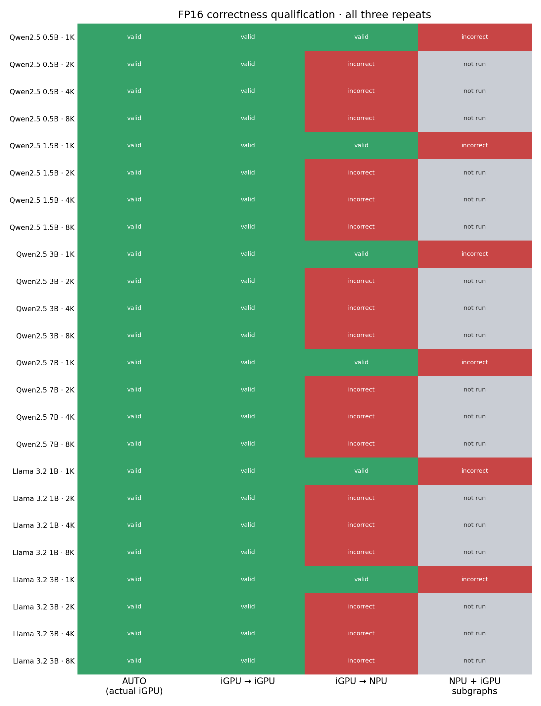
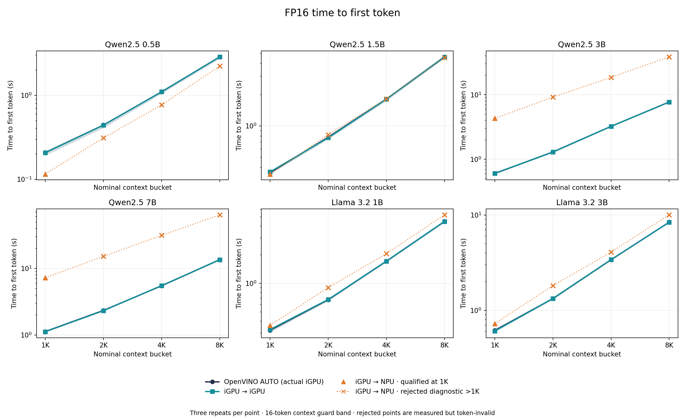
FP16 throughput and decode latency
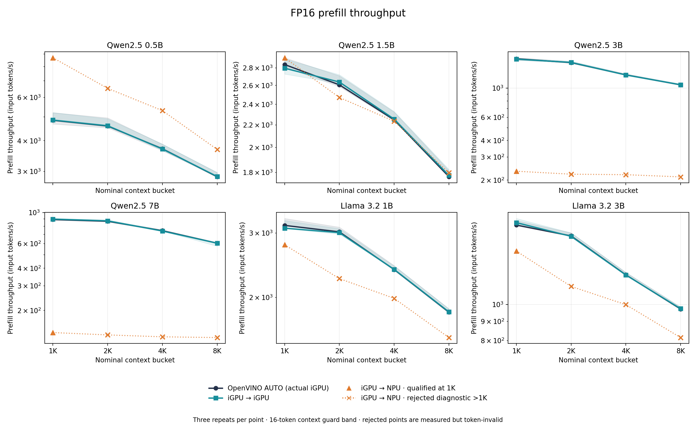
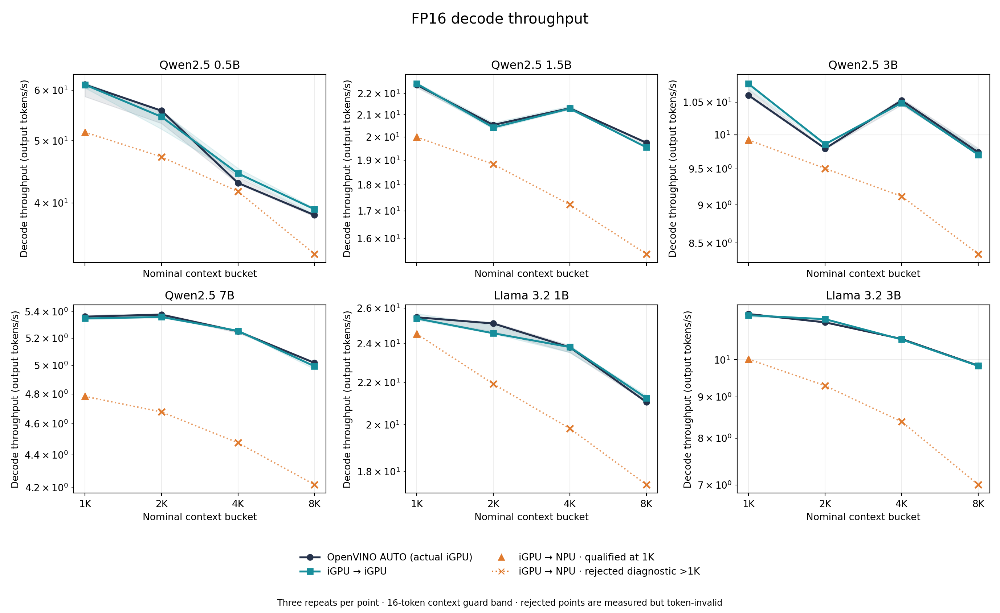
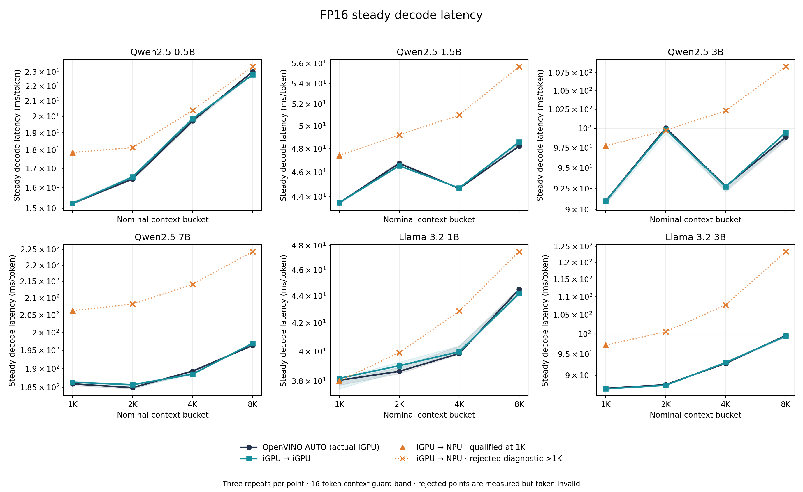
FP16 end-to-end time and energy
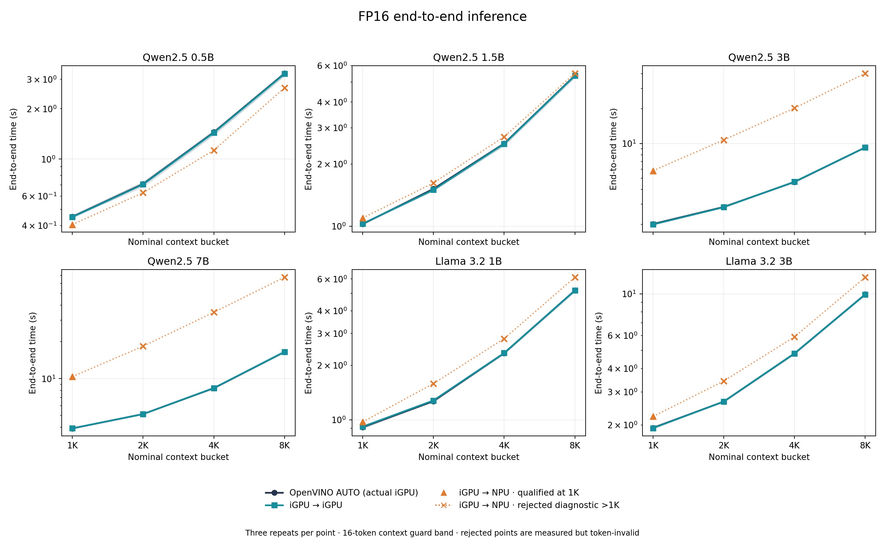
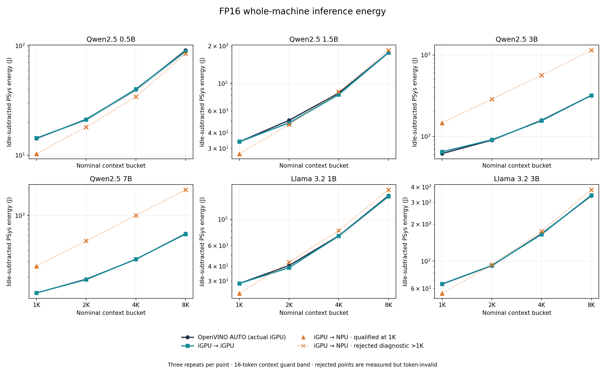
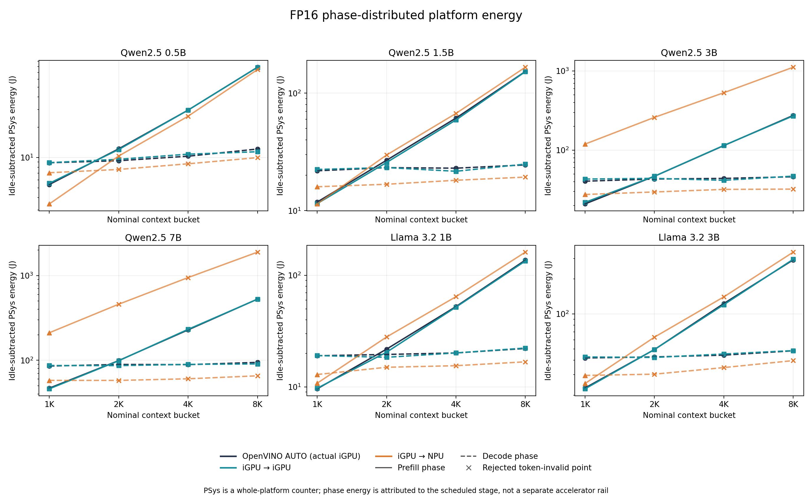
INT8 placement diagnosticsqualified routes · failures · energy
INT8 qualified placement matrix and 8K overview
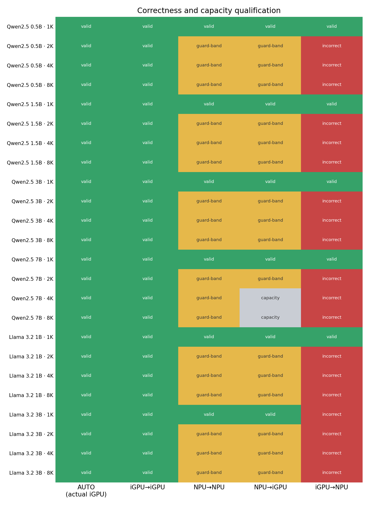
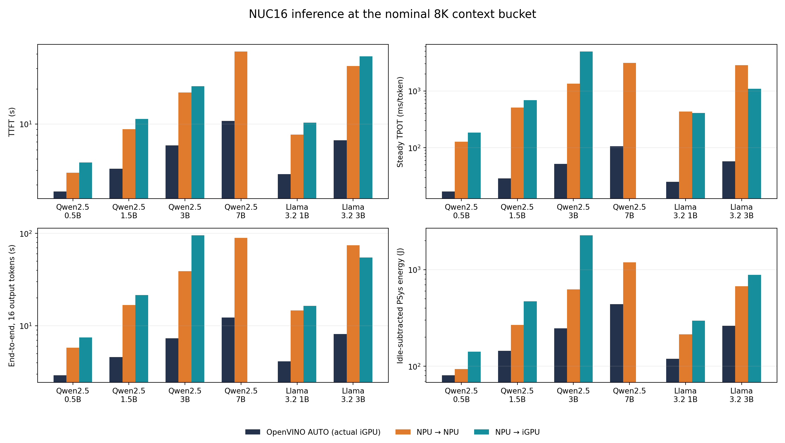
INT8 throughput and latency across 1K–8K
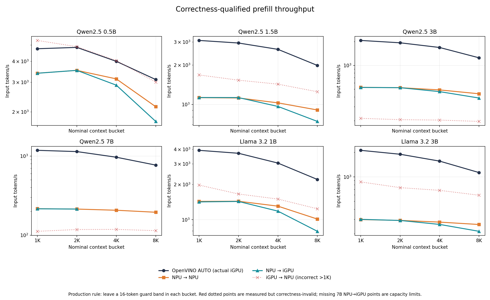
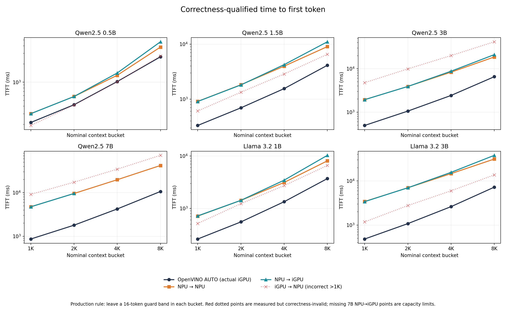
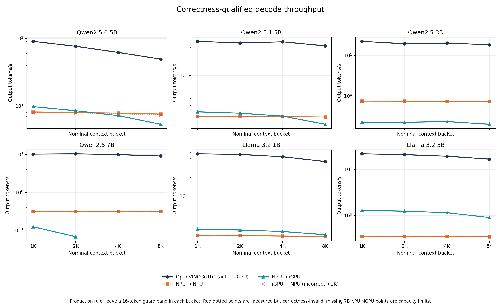
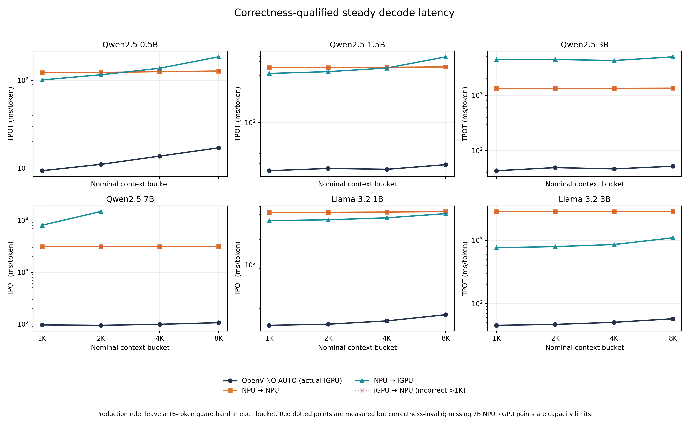
INT8 end-to-end time and energy
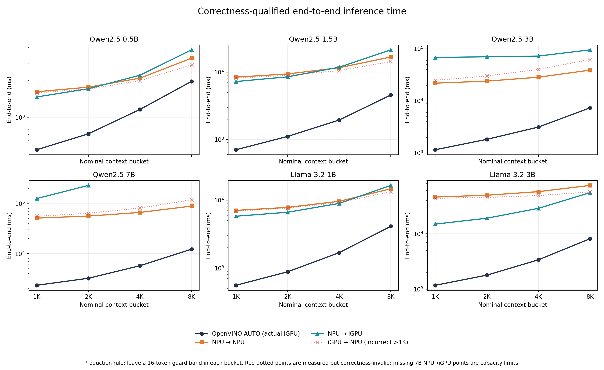
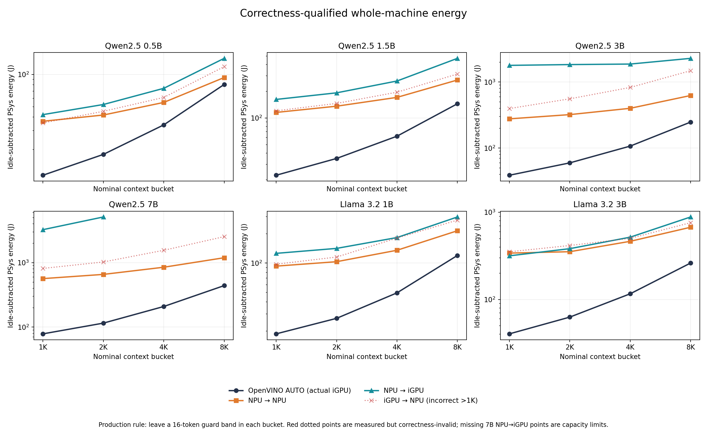
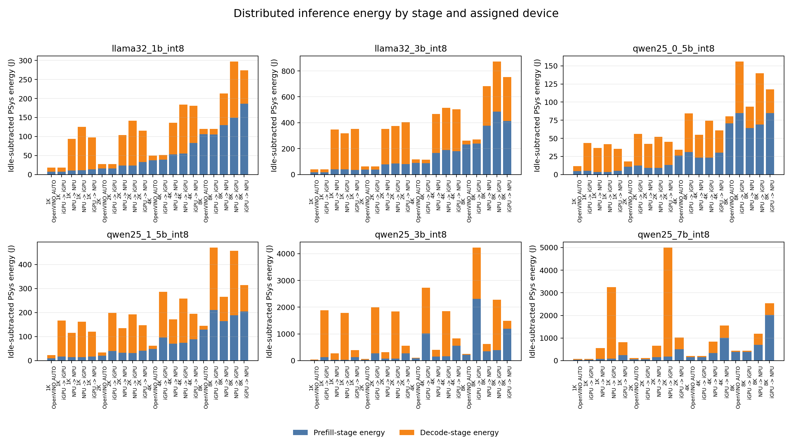
Data and reproducibilityCSV · JSON · raw cells · reports
Core Ultra 7 356H, 96 GB DDR5-5600, Ubuntu 24.04, OpenVINO 2026.3.0 for the four-case sweep; the fine-grained validation uses the validated OpenVINO 2026.0 + NNCF environment. INT8 and FP16 OpenVINO IRs, 16 generated tokens and three repetitions per whole-device cell. The four-case oracle contains 288 measured source trials plus 288 phase-composed rows. Context qualification uses a 16-token guard band. PSys is a whole-platform RAPL counter; phase energy is attributed to the scheduled device, not read from separate NPU and iGPU power rails.